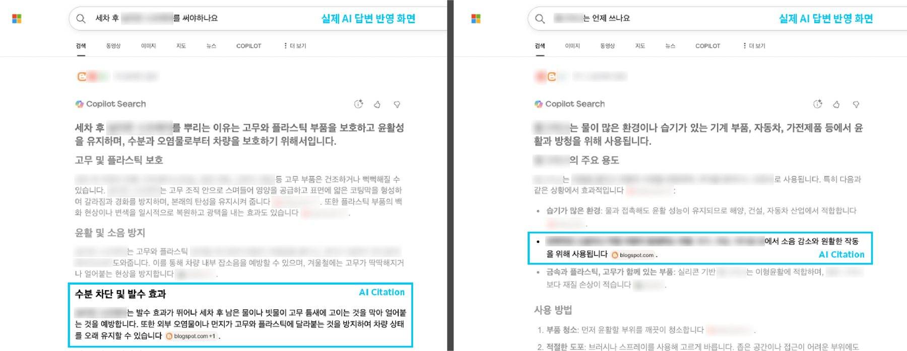
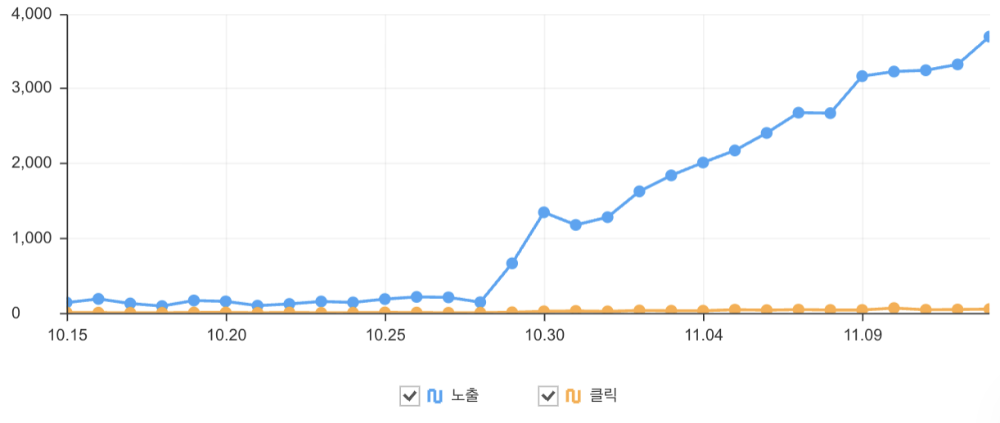

하루 30분으로 시작한 GEO
Bing에 "물그리스는 언제 쓰나요"라고 물으면, AI 답변은 반복적인 소음이나 작동 저항이 생기는 부품에 쓴다고 설명하면서 그 근거로 우리 글을 붙인다. 2026년 11월, 몇 번을 다시 검색해도 결과는 같았다.

광고 예산도, 개발 배경도 없이 하루 30분씩 쌓아서 여기까지 왔다.
신제품 자료를 찾던 날
신제품 홍보자료를 만들며 제품 정보를 AI와 함께 찾던 날이었다. 문득 이렇게 찾는 게 나만은 아니겠다 싶었다. 우리 고객들도 결국 AI에게 물어 제품 정보를 얻을 텐데, 정작 인터넷에는 부정확한 정보가 넘쳤다. 그 틈에 정확한 우리 정보를 끼워 넣을 방법은 없을까? 광고 예산 하나 없이 제품을 알려야 하는 1인 마컴에게는 그냥 지나칠 수 없는 질문이었다.
궁금해진 김에 바로 움직였다. 2026년 5월 20일 대표이사를 찾아가 개요를 설명했고, 바로 다음 날 승인을 받아 작업을 시작했다.
하루 30분
공식 홈페이지 뉴스룸은 에디터가 무겁고 다루기 어려워 가장 가깝게 느끼는 Google 생태계에서 시작하기로 했다. 블로그를 개설하고 홍보할 제품 목록부터 정했다.
막상 시작해 보니 여러 문제에 부딪혔다. GSC, 크롤링, 응답 코드 302, 200, 301, 404… 개발 배경이 없는 나에게는 모두 생소한 말이었고, 이걸 이해하는 것부터가 시작이었다.
아무리 미래를 위한 일이라 해도 본업에 지장이 없도록 하루 최대 30분만 쓰기로 원칙을 정했다. 하지만 그 짧은 시간 안에 공부하며 길을 내려니 성과는 더뎠고, 회사에는 의견을 나눌 동료도 마땅치 않았다.
규칙을 만드는 일
하루 30분으로 매일 글을 직접 쓰는 건 무리였기에 역할을 나눴다. 글은 AI가 쓰고, 나는 무엇을 어떻게 쓸지 규칙을 정하는 데 시간을 쏟기로 했다.
먼저 제품 이름 대신 "세차 후 실리콘 스프레이를 써야 하나요", "물그리스는 언제 쓰나요"처럼 고객이 실제로 맞닥뜨릴 법한 구체적인 상황 질문을 연상해 내고, 글의 구조와 품번 표기 방식이 포함된 규칙 문서를 정리해 AI가 그 틀 안에서 본문을 쓰도록 했다. 이렇게 완성된 글은 저녁에 틈틈이 예약 발행을 걸어 두었다. 7월 하순까지는 하루 네다섯 편, 8월 하순까지는 두세 편씩 내보냈고, 지금은 주말을 포함해 매일 한 편씩 나간다.
글은 AI가 쓰지만 사실 확인은 따로 거친다. 사내 자료에 접근할 수 있도록 회사가 승인한 업무용 AI(Microsoft Copilot)로 품번과 사용법을 사내 자료와 대조하고, 제품관리팀 담당자가 무작위로 골라 한 번 더 검증한다.
매일의 30분은 결과를 점검하고, 규칙을 손보고, 다음 전략을 따지는 데 쓴다. 처음부터 사람 독자보다 AI 크롤러를 중심으로 생각하고 만든 블로그라 페이지도 최대한 가볍게 유지하고 있다.
Google 대신 Bing과 네이버로
Blogger(blogspot)의 구조적 특성 탓에 302(임시 이동) 응답이 계속 보이고, Google 색인은 좀처럼 나아가지 못한다. 공식 홈페이지 매거진 기사에 블로그 링크를 걸어 두었지만 색인까지는 시간이 더 필요해 보인다.
결국 처음 계획에 없던 Bing과 네이버까지 범위를 넓혔다. 시작한 지 두 달쯤 지난 7월부터 Bing에서 노출과 인용이 잡히기 시작했고, 11월 현재 300건 가까이 색인되었다. 글머리에 적은 물그리스 답변이 바로 그 결과물이다. 국내에서 Bing 점유율은 미미하지만, AI가 우리 글을 답변의 근거로 쓰게 하겠다는 1차 목표는 이뤘다고 본다.
지금까지 쌓인 글은 약 400편이다. 10월 말부터 네이버 노출이 크게 늘어, 11월 중순까지 최근 30일 동안 노출 약 3만 9천 회, 클릭 약 610회가 잡혔다. 다만 네이버에 색인된 글은 아직 170편 남짓이다.

서점에서 생각한 GEO
몇 달간 GEO를 고민하다 보니 나름의 시각도 생겼다. 대기업이 거대 자본과 전문 개발 인력을 투입해서 하는 GEO는 핵심 키워드를 대부분 가져간다. 나는 이걸 Full-stack GEO라고 부른다. 반면 중견 이하 기업이나 외국계 기업의 작은 한국법인에는 롱테일 키워드를 확보하는 것이 생존 전략으로 보인다. 이쪽에는 Targeted GEO라는 이름을 붙였다.
스스로 이해하기 쉽게 서점에 비유해 봤다. 서점 입구나 점원 앞에 놓인 광고성 홍보물은 기존의 SEO와 비슷하다. 손님이 점원에게 "수학 참고서 주세요"라고 하면, 점원은 평판이 가장 좋고 일반적으로 권하는 참고서를 꺼내 준다. 이 영역에서는 자본력이 뒷받침되는 대기업을 이길 수 없다.
하지만 손님은 이렇게 물을 수도 있다. "중학교 3학년이 근의 공식을 쉽게 이해할 수 있게, 그림과 함께 설명된 참고서 주세요." 이때가 Targeted GEO가 힘을 발휘하는 순간이다. 내가 글감으로 제품 이름 대신 상황이 담긴 질문을 고르는 이유도 여기에 있다.
문 앞까지 찾아온 고객
네이버 노출이 늘어나면서, 블로그 링크를 타고 쿠팡 판매 페이지로 넘어가는 방문도 생기기 시작했다. 아직 많지는 않지만, 광고 한 번 없이 글만 읽고 제품을 더 알아보러 간 사람들이다. 문 앞까지 제 발로 찾아온 고객을 돌려보내지 않는 것, 그게 내가 하려는 GEO다.
요즘은 AI가 우리 글을 인용하느냐보다, 우리 브랜드를 어떻게 설명하느냐가 더 중요해지고 있다. 그래서 질문을 바꿔 보았다. Google AI 모드에 정비소에서 쓸 케미컬 브랜드를 추천해 달라고 하니, 뷔르트는 록타이트와 퍼마텍스 다음으로 현장 정비사 선호도가 높은 독일 브랜드로 소개됐다. 뷔르트 물그리스가 어떠냐는 질문에는 가격은 다소 비싸지만 지속성이 뛰어나다고 답했다. 다만 그 답의 근거는 우리 블로그가 아니라 사용자들의 블로그와 커뮤니티 글, 회사 매거진이었고, 반합성 제품을 합성 그리스로 소개하는 오류도 있었다. Google 색인이 풀리면 이 답에 우리 글이 섞여 들어갈지가 다음으로 볼 지점이다.
그래서 하루 30분은 당분간 302 문제 풀이에 쏟을 작정이다.